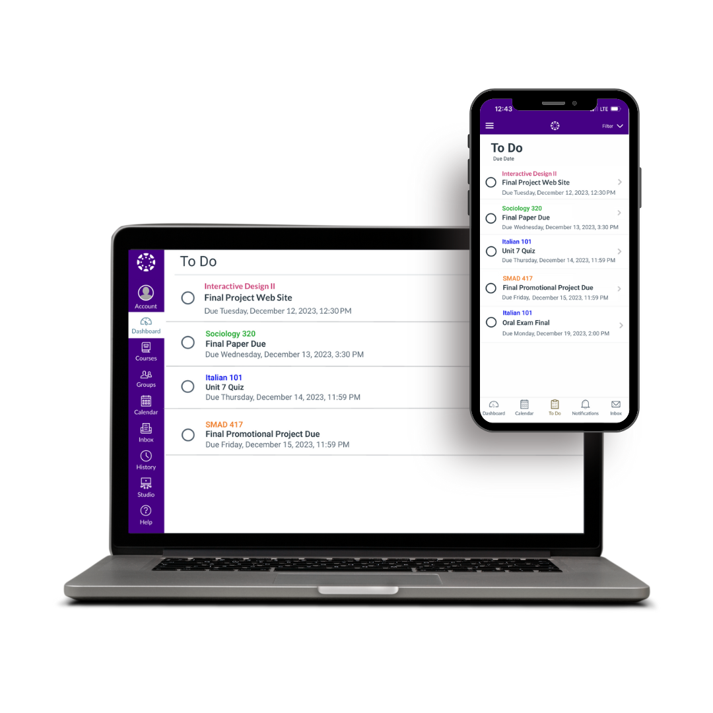

A cohesive cross-device redesign of Canvas's "To Do" feature — built in Figma with user research, wireframes, and high-fidelity prototypes.

Investigated pain points with Canvas's existing "To Do" tab to ground design decisions in real student needs.
Progressed from low-fidelity wireframes to polished high-fidelity prototypes using Figma.
Designed user flows for mobile notifications, ensuring alerts integrate seamlessly with the redesigned experience.
Extended the "To Do" feature into the desktop site, creating a unified experience across both platforms.